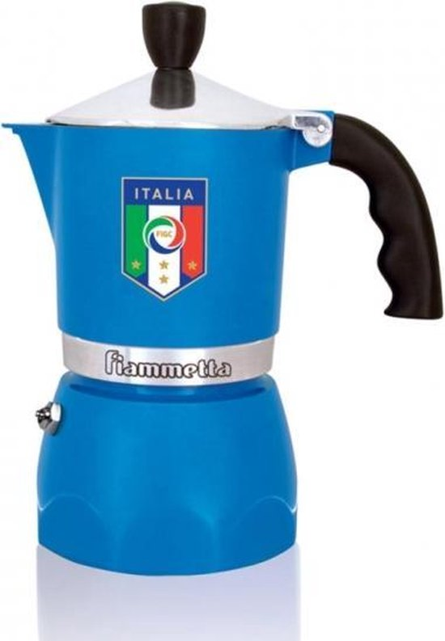
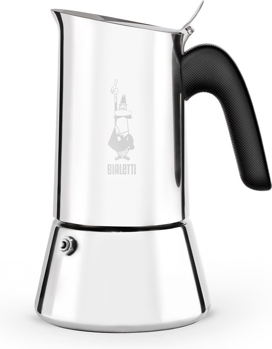

📊 Snelle Vergelijking - Alle 10 Modellen
Vergelijk alle eigenschappen in één overzicht. Klik op een modelnaam voor de volledige review.
| Ranking | Model | Materiaal | Inductie | Capaciteit | Prijsklasse | Beste voor | Rating | Acties |
|---|---|---|---|---|---|---|---|---|
| 1 | Bialetti Fiammetta 3c | Aluminium | ❌ | 3 cups (150ml) | € | Beginners | Review | |
| 2 | Bialetti Venus 4c | RVS | ✅ | 4 cups (200ml) | €€ | Inductie | Review | |
| 3 | Bialetti Moka Express 3c | Aluminium | ❌ | 3 cups (150ml) | € | Klassiek | Review | |
| 4 | Bialetti Musa 6c | RVS | ✅ | 6 cups (300ml) | €€ | Gezinnen | Review | |
| 5 | Bialetti Dama 3c | RVS | ✅ | 3 cups (150ml) | €€ | Design | Review | |
| 6 | Bialetti Alpina 2c | Aluminium | ❌ | 2 cups (100ml) | € | Compact | Review | |
| 7 | Alessi Pulcina 3c | Aluminium | ❌ | 3 cups (150ml) | €€€ | Design | Review | |
| 8 | Bialetti Mini Express 2c | Aluminium | ❌ | 2 cups (100ml) | € | Solo gebruik | Review | |
| 9 | Grosche Milano 6c | RVS | ✅ | 6 cups (300ml) | €€ | Moderne stijl | Review | |
| 10 | Bialetti Brikka 4c | Aluminium | ❌ | 4 cups (200ml) | €€ | Crema laag | Review |
1
Best choice
Bialetti Fiammetta 3c

Materiaal
Aluminium
Inductie
❌
Capaciteit
3 cups
Prijs
€35
2
Best inductie
Bialetti Venus 4c

Materiaal
RVS
Inductie
✅
Capaciteit
4 cups
Prijs
€48
3
Klassiek
Bialetti Moka Express 3c

Materiaal
Aluminium
Inductie
❌
Capaciteit
3 cups
Prijs
€25
Legenda: € = €15-30 | €€ = €30-60 | €€€ = €60+ | c = cups (kopjes)